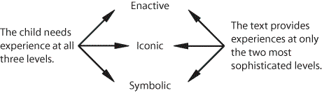

|
|||||||||||||||||||||||
|
14
|
|||||||||||||||||||||||
|
Making Time for the Basics: Some thoughts
on Viable Alternatives |
|||||||||||||||||||||||
|
Thomas
R. Post
|
|||||||||||||||||||||||
|
There is almost
certainly not a universal logic of the ways in which children Developments in
Mathematical Education |
|||||||||||||||||||||||
| ALTERNATIVES
in mathematics education are often presented in a manner that implies a
forced choice–heterogeneous or homogeneous grouping, problem solving
or basic skills, discovery or exposition, textbooks or laboratory activities,
individualized or group instruction, open or traditional self-contained
classroom, process or product objectives. When such options are presented
as mutually exclusive, false impressions are communicated. Furthermore,
many viable alternatives are eliminated from consideration. In this article,
a case will be made for a program that admits a broad range of objectives,
modes of instruction, and content domains–one whose early emphasis
is on exposure rather than mastery.
THE NATURE OF THE PROBLEM Demands on school time are enormous. Virtually all subject disciplines, the arts as well as the sciences, vie for time during the school day. Competition for instructional time also exists within each discipline. A more balanced and viable program can become a reality through a redistribution of the time that is currently allocated to mathematics. New programs might be incorporated in one of two ways:
Unfortunately, diversity is not characteristic of mathematics as it is usually taught. An examination of current commercially available mathematics programs at the elementary and junior high school levels provides convincing evidence that school mathematics programs are quite narrow in their focus and are almost exclusively concerned with number activities. Such activities typically concentrate on computation with the rational numbers across the four arithmetic operations. The back-to-the-basics movement has reestablished calculation as central to mathematics program objectives. Deciding what is basic in mathematics is a deceptively simple procedure. On the one hand, lay individuals have a tendency to promote those skills that they know and understand–areas of learning that have always been the raison d'être of the school mathematics program. On the other hand, some persons who are highly involved in mathematics education have a decidedly different consensus concerning basic skills and learning in mathematics. The basic skills suggested by a significant number of participants at the Euclid Conference on Basic Mathematical Skills and Learning (1976, vol. 1) were in contrast to the ongoing curricula in most schools. Issues beyond concern for the mere development of computational facility dominated the conference. Many participants suggested that process-oriented objectives should occupy school mathematics programs. These included estimation, approximation, schemes for the collection and interpretation of data and subsequent rational decision making, generalizing through pattern finding, the development and refinement of heuristic procedures, graphical analytic techniques, appreciation for the sheer power of the subject, rates of change, measure, equilibrium, the use of the calculator, and, of course, the ubiquitous objective of problem solving. Such a list clearly represents a departure from the status quo. Schools generally defer to commercial mathematics textbooks when defining their mathematics programs. Such texts are dominated by structured number experiences and pencil-and-paper activities. In general, the textbook becomes the program. This is indeed unfortunate, because as long as this situation exists, the traditional parameters of the elementary and junior high school mathematics programs can never be expanded to include a more representative sample of the discipline of mathematics and its applications. Experiences other than those related to number must be integrated into the mathematics program. COMPONENTS OF A BALANCED PROGRAM Three conceptual categories are proposed for a balanced mathematics program. Each needs to be accompanied by specific product and process objectives that need to be addressed. The first, structured number-related activities, is composed of experiences similar to those currently contained in a typical program. The second and third categories, environmental mathematics and logic or structural mathematics, represent more of a departure from the status quo. |
|||||||||||||||||||||||
| Category
A: Structured number-related activities
Structured number-related activities are similar to the paper-and-pencil activities provided by commercial text publishers. These are usually highly structured, carefully sequenced, and contain a considerable amount of repetition. Their major functions are to transmit a knowledge of the concepts of number and the operations on numbers and to provide exposure to and mastery of, selected algorithms dealing with these operations. Most commercial textbook series are concerned with essentially the same mathematical topics. These topics are important and should be maintained in the school program. However, the mode in which these ideas are presented is essentially inconsistent with the psychological composition of the intended consumer. Jerome Bruner (1966) identified three modes of representational thought–enactive (hands on), iconic (picture or representation) and symbolic (no concrete referent). Basically analogous to the "children learn from the concrete to abstract'' proposition, these levels or modes are also referred to as concrete, semi-concrete, and abstract. A textbook can never provide enactive experiences. By its very nature it is exclusively iconic and symbolic. That is, it contains pictures of things (physical objects and situational problems or tasks), and it contains the symbols to be associated with those things. It does not contain the things themselves. Mathematics programs that are dominated by textbooks are inadvertently creating a mismatch between the nature of the learners' needs and the mode in which content is to be assimilated. This view is supported by cognitive psychologists who have indicated (1) that knowing is a process not a product (Bruner 1960): (2) that concepts are formed by children through a reconstruction of reality, not through an imitation of it (Piaget 1952); and (3) that children need to build or construct their own concept from within rather than have those concepts imposed by some external force (Dienes 1960). This evidence suggests that children's concepts basically evolve from direct interaction with the environment. This is equivalent to saying that children need a large variety of enactive experiences. Yet textbooks, because of their very nature, cannot provide these. Hence, a mathematics program that does not make use of the environment to develop mathematical concepts eliminates the first and perhaps the most crucial of the three levels, or modes, of the representation of an idea. This situation is pictorially represented in figure 1. |
|||||||||||||||||||||||
|
Modes
of Representational Thought
|
|||||||||||||||||||||||
|
 |
|||||||||||||||||||||||
|
Fig.
1
|
|||||||||||||||||||||||
| Clearly
an enactive void is created unless textbook activities are supplemented
with real-world experiences. Mathematics interacts with the real world to
the extent that attempts are made to reduce or eliminate the enactive void.
An argument for a mathematics program that is more compatible with the nature
of the learner is therefore an argument for a greater degree of involvement
in applying mathematics.
It does not follow that paper-and-pencil activities should be eliminated from the school curricula. However, such activities alone can never constitute a necessary and sufficient condition for effective learning. Activities approached solely at the iconic and symbolic levels need to be restricted considerably, and more appropriate modes of instruction should be considered. This approach will naturally result in greater attention to mathematical application and environmental embodiments of mathematical concepts. |
|||||||||||||||||||||||
| Category
B: Environmental or applied mathematics
This second category includes activities that are distinctly different from arithmetic or structured number activities. They are, however, no less significant. They are characterized by student involvement, and they often involve interaction within other disciplines. For discussion purposes this category has been divided into activities that are defined by three types of objectives:
The exploration and description of the immediate environment offers the opportunity for effective interplay between the discipline of mathematics and the physical world, The child's innate interest in, and curiosity about, geometric ideas as embedded in the real world make geometry a psychologically appropriate context in which to learn and teach mathematics. Experimental process activities teach children much about mathematics and its relationship to the real world. Experimental procedures have played a role of major importance in people's attempts to understand more fully their physical world. Briefly, experimentation involves exposure to a problem situation, forming a hypothesis, testing and evaluating the hypothesis, and drawing conclusions based on information amassed in previous phases of this process. Pupils' attainment of many higher-order objectives can be facilitated by involvement in carefully designed experimental settings. Pattern recognition, generalization, abstraction, using arithmetic skills, problem solving, empirical verification of mathematically generated predictions a more thorough understanding of the relationship between mathematics and aspects of the real world, and the development of logical thought processes are all dimensions that can be effectively addressed in experimental situations. Non-cognitive factors such as motivation, attitude, and interest can also be enhanced by such an approach. All these activities are well defined and have been carefully structured by the teacher or the learning material. Such activities will have a definite product objective but will be designed to involve children actively in the experimental process by encouraging a search for pattern and an examination of similarities and differences along a fairly narrow continuum. For example, a child might be asked to determine whether the diameters and circumferences of circular objects (both two- and three-dimensional) are related in any way. The student will be provided with a variety of circular objects, such as discs and wastepaper baskets, as well as string and a linear measure of some type. Individuals or small groups will measure circumferences and diameters, record the ordered pairs in tabular form, and examine these pairs of numbers for recurring patterns. A record sheet that organizes data in a convenient form might also be provided by the teacher. After they recognize the emerging pattern, the students are then encouraged to find another untested circular object, measure its circumference (or diameter), and then predict the other dimension. This is done both to evaluate pupils' understanding and to provide a mechanism for participants to check whether the suggested pattern can be generalized. Another example might involve the tossing of two dice fifty or more times and asking pupils to keep a record of the results. When asked to predict the most popular number pupils would become involved in pattern recognition and a subsequent search for the underlying reason. Several important principles of probability could be generated and illustrated through such a simple experiment. Such activity promotes valuable process and product outcomes. Process objectives are attained by virtue of the fact that pupils are hypothesizing, are making individual and group decisions, and are generally involved in a procedure that has served humanity remarkably well. Product objectives result from specific understandings of; or at least exposure to, important mathematical ideas. Some sources of experimental activities follow, (a) MINNEMAST (Minnesota Mathematics and Science Teaching Project) has developed a wide variety of activities that exploit the interrelationships between mathematics and science. Pupils are continually exposed to relatively structured experimental settings in activities that have clearly envisioned product outcomes. However, these activities have been structured to contain ample provision for the development of process-oriented skills. (b) The Nuffield Mathematics Project materials (Nuffield Foundation) contain over thirty teacher's manuals that span a wide range of topical areas for children ages five through thirteen. These materials illustrate examples of environmental exploration and experimental materials. The process orientation is also clearly evident and is reflected in one of the Nuffield Project's commonly used program descriptives, "The emphasis is on how to learn, not what to teach; on understanding, not role learning.'' (c) Many commercially produced assignment cards and laboratory lessons also fall naturally into this category of activity. Numerous sets of such activities are produced by virtually every major commercial publisher. The reader is encouraged to examine such materials, since they provide a wealth of new and different activities, many of which can be infused into nearly any ongoing mathematics program. Integrated studies on thematic curricula are less structured than the other subdivisions within environmental mathematics. Clearly defined mathematical content objectives are not always precisely predetermined. In fact, many times these content objectives cannot be identified beforehand: they evolve as the activity proceeds. The process dimension is much more in evidence here as pupils decide the direction the activity will take. Some difficulties occur because specific aspects of problem exploration cannot always be predetermined. In fact, unanticipated directions will be taken. Such "ambiguity" requires a different philosophical perspective on the part of the teacher. A different role for the teacher is required, and in this new role the teacher lacks the security of knowing beforehand which questions to ask' when to ask them, and how best to promote student mastery of specific content objectives. This role is understandably unsettling to many, but it can become, with practice, an effective teaching behavior. Thematic activities are, by definition, interdisciplinary. Other disciplines become involved in the ultimate answer to many real-world questions. The initial questions posed are often nonmathematical and will arise from a number of contexts. For example, such problems as "Design a bus route from point A to point B within a given city'' or "Identify the major sources of pollution in your town and propose a plan to help alleviate the problem" or "Design a recreational facility for your local community or school'' are not well defined and require initial discussions about problem delimitation the identification of relevant variables, the type and amount of data to be collected, data analysis procedures, the formulation of conclusions, and the development of recommendations that are based on information gathered. In fact, the spirit of thematic activities is reflected in several essays in this yearbook. One commercial source of thematic activities is the USMES Project (Unified Science and Mathematics in the Elementary School)* which has developed a wide variety of these types of materials. USMES "challenges" attempt to involve children in problems that are real and have both meaning and relevance. These materials transcend the discipline of mathematics an extensively involve both science and social science and often the arts as well USMES units are open ended and deal with problematic situations that pupils encounter in their everyday lives. They have such non-imposing title as Dice Design, Burglar Alarm Design, Pedestrian Crossings, Lunch Lines Describing People and Designing for Human Proportions, Electro-Magnetic Design, Small Group Dynamics, Consumer Research, and Soft Drink Design. Teacher's manuals define the broad parameters of each problem but emphasize the desirability of encouraging the development of subproblems and subinvestigations that are suggested by the pupils. There are no formalized student materials! This type of activity can also be found in many British primary school under the rubric "integrated studies'' or "thematic curriculum." Although specific examples vary widely from school to school, the general approach is consistent across locales. Not unlike the unit approach popularized in the United States in the 1930s by John Dewey and others, the thematic curriculum begins with a central theme, idea, or experience. Activities directly and marginally related to this theme continually evolve in a manner that is relevant to, and consistent with, pupils' interests and abilities. To illustrate this point, consider the following personal correspondence received from British headmaster (principal) whose school is heavily involved in such curriculum: We believe that education (certainly for children of the age range we cater for, 8-12) should not be broken up into subject compartments. Our children learn from their experiences, those encountered at random and those to which we introduce them deliberately: but these experiences are all-embracing and involve all aspects of knowledge at once. We believe that it is artificial to attempt to provide separate experiences for each "subject." Every effort is made to show the underlying unity of all knowledge. Math assignments are planned to involve other "subjects," naturally and without rigid demarcation lines appearing. For example, when initially planning unit on Swedish immigration, I found myself thinking that we might first have introduced this idea by making a register of all the names in the school, grouping them (work on "sets'') and noting those which indicated a Swedish origin (origins of surnames?). This would lead to such ideas as "why did they immigrate?''–(history the geography of the Baltic area–methods of travel, then and now–distances by sea and air–speeds of sailing ships, steam ships and aircraft–courses (angles), headings and fixing positions (latitude and longitude–coordinates–bearings and distances)–the development of the steam engine–science work on transmission of heat–sources of fuel–causes of wind–meteorology–salt water–flotation–specific gravity–areas of sails– kept fresh for long sea voyages?–bacteria–Pasteur and his work–refrigeration–canning–pickling–foods?–how does the diet of various countries differ?–why?–what weights of food would be required–how have the sizes of ships increased?–convert the measurements of Noah's ark into modern day units–compare it with a modern ship of comparable size–the animals in the Ark–and back to "sets'' again. I set down all of these ideas without any pre-thought, just as they came into my mind and as fast as my typing skills would allow. They would need ordering and development before I would start using them. The point I am trying to make is how completely, from one given idea, you can involve work in all the "subjects"–though, as you can see my mind tends towards my own interests of maths and science. All children would cover all of this work–though a slow child might be content with working on straight-forward speeds and distances, while a more able child would be relating fuel consumption to different speeds, having obtained help by writing to an airline, or shipping company. The work of each study is dealt with by the children in a series of graded assignments, prepared and presented by each teacher. The manner and order in which they are presented is entirely the responsibility of the teacher in charge of a class.
Impressive? Undoubtedly, but such an approach is not without its pitfalls and dangers. First and perhaps most important, such an approach requires a very capable and industrious teacher who is willing to expend the additional effort required by such a program. Second, at present integrated curricula are not sufficiently developed to ensure pupil involvement in all those areas of mathematics that are considered "crucial" to the mathematically literate individual. This is especially true if one considers the problems of logical sequence within a particular mathematical topical area. Third, within such a program all pupils will gravitate (with the help of the teacher) to activities that are in keeping with their interests and abilities. Therefore, all pupils will not have the same experiences, and, in fact, different children may spend the majority of their time within different subject domains. It will therefore not be possible to evaluate pupil progress using group-administered or standardized achievement tests. The appropriate question is not whether a thematic approach should totally replace the more structured mathematics curriculum but rather "Is pupil involvement therein educationally justifiable?" and if so, "Can such an approach be used to enrich the total experiences (mathematics included) provided for children?'' If these two questions can be answered in the affirmative, then it seems appropriate to include such activities as one of many viable components in the pupils' overall educational experience. |
|||||||||||||||||||||||
| Category
C: Logic-oriented or structural mathematics
Activities within this domain are surely among those found least often in school mathematics programs. The most distinguishing characteristic of these activities is that they are primarily structured to promote the eventual discovery of valid modes of reasoning. They are concerned with the detection of similarities and differences, the more efficient processing of information, the introduction of the relationships "and," "or," and "not,'' and preparation for the ideas of "if . . . then'' and "if and only if. . . then." Such activities are not necessarily regarded as being socially useful, like structured number activities, nor are they thought of as helping one to understand the physical world, like environmental or applied mathematics problems. Logic-oriented activities are normally designed to help develop modes of logical thought or to explicate some type of formal structure, such as a mathematical group. These activities differ from structured number experiences in that they often are not concerned directly with the concept of number. Logic-related activities differ from application activities in that they are not necessarily designed to explicate something in the real world by attempting to quantify some aspect of it. Logic-oriented activities often do not use numerical procedures in the problem-solving process. The most popular materials relevant to this type of activity are the logic or attribute blocks, sometimes called property blocks (Dienes 1966). An incredible variety of games and activities have been developed that use these materials. It should be noted that these activities range in difficulty from those appropriate for kindergarten children to those challenging for an adult. Several science programs (AAAS, SCIS, and ESS) have used these materials as a standard part of their curricula. It seems ironic that they have received wider implementation in science than in mathematics. The Bulmershe Mathematics Programme (see Bibliography) is an English curriculum project whose ''units'' deal with many topics that are not normally found in American mathematics programs. Those topics that are similar to those found in American schools are approached in a very different manner, both mathematically and pedagogically. The majority of activities are designed for individual or small-group work in a relatively, individualized setting. "Those persons involved in the development of the Bulmershe materials have devised them to complement the best of British contemporary primary (elementary) mathematics teaching, taking note of the many special problems involved in less formal styles of teaching'' (Bulmershe Mathematics Programme 1971, Teacher Introduction, p. 2). Perhaps the most prominent source of logic-oriented activities in American mathematics programs is the mind-teaser type of puzzle and selected commercial games that sometimes find their way into the mathematics classroom. Although such puzzles and games can be useful and motivating to pupils, it should be recognized that they are usually "one shot'' experiences and thus are incapable of providing sequential learning activities that deal with an important concept or topical area. Their potential usefulness, although limited, should not be ignored. |
|||||||||||||||||||||||
|
TIME
ALLOTMENTS FOR SUGGESTED ALTERNATIVES
It is always risky to suggest that very specific guidelines accompany an idea that undoubtedly will require further thought and refinement. Yet, a point of departure is needed, and so table I is offered as a first approximation and a stimulus for further discussion. |
|||||||||||||||||||||||
|
|||||||||||||||||||||||
|
The reader will notice the inverse relationship between the amount of time allocated to categories A and C. As pupils progress through school, structured number activities decrease by the same amount that logic and structural mathematics activities increase. With increased sophistication, the internalization of the basic processes, and the increasing availability of the calculator, the pupil should need to devote less and less time to the maintenance of algorithmic procedures as developed in category A. In the same way, evolving psychological maturity will enable the pupil to relate to, and appreciate more of, the intellectual processes that underlie rational thought. A more involved look at structural mathematics will also provide a more stable foundation for the abstractions that are sure to follow at the high school level. Notice, also, the consistently large percentage of time devoted to applications or environmental mathematics. The intent in structuring table I in this manner is fourfold: (1) to suggest that environmentally oriented mathematics has the potential to make truly significant contributions to a well balanced program; (2) to demonstrate that some of the objectives relevant to categories A and C can be accomplished or enhanced through direct interaction with the environment; (3) to propose that the range of alternatives is virtually limitless and is clearly capable of sustaining continued involvement throughout the school years; and (4) to suggest that repeated attempts to apply the discipline over a sustained period of time can make mathematics more meaningful, more relevant, more interesting, and more satisfying to the pupils involved. |
|||||||||||||||||||||||
|
RELATIONSHIP
BETWEEN CATEGORY, METHOD, AND OBJECTIVE
It is also of interest to view the categories as they relate to the type of objective and the type of pedagogical method. Table 2 suggests that activities appropriate to each category have both a major and a minor orientation. The cautionary remarks suggested for table 1 are also meant to apply to table 2. |
|||||||||||||||||||||||
|
|||||||||||||||||||||||
|
|||||||||||||||||||||||
| It is this author's belief that process-oriented objectives are almost wholly ignored when the mathematics program is dominated by structured number activities. Table 2 gives attention to both process and product objectives and also provides for three types of teaching methods. Two blocks are left empty because their respective row and column headings are somewhat inconsistent. | |||||||||||||||||||||||
| A word about the
intersection of categories
These categories are not discrete, and, in fact, a good deal of overlap exists. For example, consider activities that might be included in category B–environmental or applied mathematics. Recall that this is mathematics that is actually being applied to the environment. Obviously, such application will entail the quantification of various aspects of reality, which in turn will require pupils to do computation. There is a subtle, yet powerful difference between a child performing a multiplication problem in category A and a child doing the same activity in category B. In the first situation the child is learning to use and develop expertise in a particular computational algorithm for the purpose of developing expertise in using that particular computational algorithm. In the second situation a child is using the same computational algorithm, but its use is a means to an end rather than an end in itself. The child in the latter situation might be in the process of deciding how much fertilizer her dad should buy for the spring feeding and what it will cost. In both situations the child might be computing 81 x 93 but for very different reasons. A further distinction needs to be made between the situation as applied to one's own lawn and a similar situation posed as just another word problem. To the child, the word problem and the actual problem setting are interpreted as vastly different situations. One is viewed as real, the other contrived. This difference in perception results in increased motivation and an increase in the understanding of the relevance and widespread applicability of the discipline. A similar argument might be made for the relationship between categories C and A and between C and B, although in the latter comparison the similarities may not be as readily apparent. It seems pedagogically wise to highlight repeatedly the similarities and differences between the three conceptual domains, since all contain experiences that are decidedly mathematical in nature, and hence-they share common foundations. The amount of time devoted to any curricular entry is directly proportional to the significance which the educational community ascribes to it. This paper has suggested that overt steps be taken to modify the mathematics program, which is, at present, dominated by structured number activities. Instead, it is proposed that time allotted to mathematics be partitioned into three discernible but non-discrete components. It is believed that appropriate attention to areas such as environmental mathematics, logic, and structural mathematics will not be forthcoming unless and until we consciously allot an identifiable portion of the mathematics program to them. |
|||||||||||||||||||||||
|
THE
FINAL SOLUTION–WHY IS IT SO ELUSIVE?
It is doubtful that the solution to the myriad of problems in mathematics education does, in fact, exist. There are simply too many variables to be accommodated in any one approach or philosophical point of view. The fact remains, however, that few persons directly involved with mathematics programs in today's schools are satisfied. These include parents, teachers, administrators, and, of course, students. The only exception is, perhaps, the textbook publisher. Some of this dissatisfaction is attributable to philosophical differences of opinion: some is attributable to our reluctance continually to examine the role that mathematics should play in the total school curricula; and some clearly is due to our inability to match content, method, and individual. There is much that we do not know about the nature of the learner, the nature of the learning process, and the interaction between them. One must, therefore, be highly skeptical of the single-dimensional solutions that are suggested from time to time (for example, back to the basics). A multifaceted program such as the one suggested here is structured for breadth rather than depth in a single domain. This is true for both content and method. Such organization seems particularly appropriate because of the age level to which these suggestions are addressed and because of the wide diversity of pupil interest, motivation, content preference, and learning styles that can be accommodated through such an approach. BIBLIOGRAPHY Attribute Games and Problems. Elementary Science Study Program. St. Louis: McGraw-Hill Book Co., Webster Division. 1968. Bruner. Jerome S. The Process of Education Cambridge. Mass.: Harvard University Press. 1960. --- Toward a Theory of Instruction. Cambridge. Mass.: Harvard University Press. Belknap Press. 1966. Bulmershe Mathematics Programme. Distributed by ESA Creative Learning Limited. Pinnacles, P.O. Box 22, Harlow, Essex. England CM 19 5AY. Units published i971-1974. Conference on Basic Mathematical Skills and Learning. Euclid. Ohio. Contributed Position Papers. vol 1: Working Group Reports. vol. 2. Washington, D.C.: National Institute of Education. 1976. Dienes. Zoltan P. Building Up Mathematics. London: Hutchinson Educational. 1960. --- An Example of the Passage from the Concrete to the Manipulation of Formal Systems. Educational Studies in Mathematics 3 (1971): 337-52. --- Mathematics in the Primary School. London: Macmillan & Co.. 1969. Dienes. Zoltan P.. and W, E. Golding. Approach to Modern Mathematics. New York: Herder & Herder. 1971. Greenes. Carole. Robert Willcutt, and Mark Spikeli. Problem Solving in the Mathematics Laboratory. Boston: Prindle. Weber & Schmidt. 1972. Howson. A. G.. ed. Developments in Mathematical Education. Proceedings of the Second International Congress on Mathematical Education, p. 155. Cambridge: At the University Press, 1973. MINNEMAST (Minnesota Mathematics and Science Teaching Project). Available from Minnemast Center. 148 Peik Hall. 159 Pillsbury, University of Minnesota, Minneapolis. NIN 55414. Published1965-1970. Nuffield Foundation. Nuffield Mathematics Project Materials. New York: John Wiley & Sons. 1969-1971. Piaget. Jean. The Child s Conception of Number New York: Humanities Press. 1952. Unified Science and Mathematics in the Elementary School (USMES). Newton, Mass.: Education Development Center, 1972-1977. |
|||||||||||||||||||||||